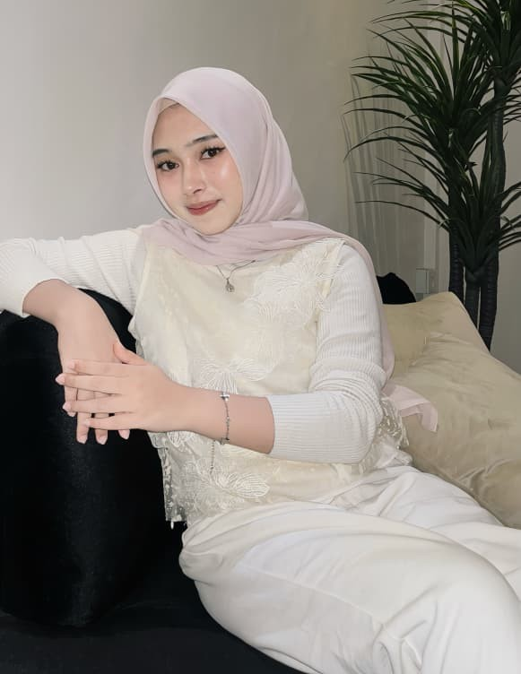

Maafin aku ya?
Aku janji bakal lebih baik. Plis jangan marah lagi 🥺
Dimaafkan
Nggak!

Sayangkuu Cipaa Cantikk,, Terimakasih yaa sudah maafin aku. Kasih Sayang dari gantengnya kamu,, ISSEL FAREL ❤️
Sayang banget deh sama kamu!